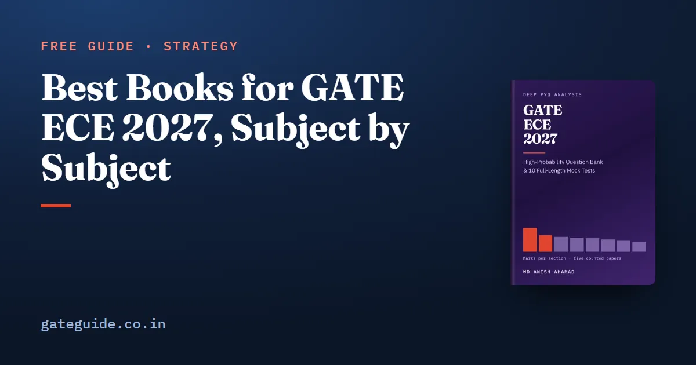

Best Books for GATE ECE 2027, Subject by Subject

If you want one reference text per section for GATE ECE 2027, use the standard electronics textbooks: Kreyszig for mathematics, Hayt and Kemmerly for networks, Oppenheim and Willsky for signals, Streetman and Banerjee for devices, Sedra and Smith for analog circuits, Mano for digital, Nagrath and Gopal for control, Haykin for communications and Hayt and Buck for electromagnetics. Read them for method, then move to past papers. This guide gives the list, shows where the 2027 syllabus sends you to new chapters, and tells you where textbooks stop.
In this guide
- Key takeaways
- Three terms before the list
- The list at a glance
- How to split reading time by where the marks are
- How to read a textbook for GATE
- Networks, signals and systems
- Devices, analog and digital circuits
- Control, communications and electromagnetics
- Where textbooks stop, and where the GATE ECE 2027 book fits
- Quick revision
Key takeaways
- One primary textbook per section is enough. A second book is for a doubt, not for a second full read.
- Networks, Signals and Systems is the largest section, 17.0 marks a paper on the mean; give its books the most time.
- The 2027 syllabus changed in four places, and every standard text already covers them.
- For FIR and IIR filter design, read pole-zero geometry, not only the window and bilinear recipes.
- Digital Circuits and Electromagnetics did not change at all, so their reading lists stand as they were.
- Textbooks teach the method; past papers teach how GATE asks it. You need both, in that order.
Three terms before the list
A primary text is the one book you read for a section, chapter by chapter, with a pencil. A reference text is a second book you open only when the first explanation does not click. The past-paper layer is the set of GATE questions on a topic, which shows how the idea is examined.
The list below names standard textbooks used across Indian engineering courses. It gives author and title only. Editions and prices are left out because they change. Several of these books have gained co-authors in recent editions; any recent edition covers the GATE syllabus lines.
Before you buy anything, download the official EC syllabus from gate2027.iitm.ac.in. GATE Guide is an independent site with no connection to IIT Madras or the GATE office. The GATE ECE 2027 syllabus changes guide explains each of the four changes.
The list at a glance
| Syllabus section | Primary text | Second text for doubts |
|---|---|---|
| Engineering Mathematics | Erwin Kreyszig, Advanced Engineering Mathematics | Papoulis and Pillai, Probability, Random Variables, and Stochastic Processes |
| Networks | Hayt, Kemmerly et al., Engineering Circuit Analysis | M. E. Van Valkenburg, Network Analysis |
| Signals and Systems | Oppenheim, Willsky and Nawab, Signals and Systems | Oppenheim and Schafer, Discrete-Time Signal Processing; Proakis and Manolakis, Digital Signal Processing |
| Electronic Devices | Streetman and Banerjee, Solid State Electronic Devices | D. A. Neamen, Semiconductor Physics and Devices |
| Analog Circuits | Sedra and Smith, Microelectronic Circuits | B. Razavi, Fundamentals of Microelectronics |
| Digital Circuits | Mano and Ciletti, Digital Design | Hamacher, Vranesic and Zaky, Computer Organization |
| Control Systems | Nagrath and Gopal, Control Systems Engineering | K. Ogata, Modern Control Engineering |
| Communications | S. Haykin, Communication Systems | Lathi and Ding, Modern Digital and Analog Communication Systems |
| Electromagnetics | Hayt and Buck, Engineering Electromagnetics | Jordan and Balmain, Electromagnetic Waves and Radiating Systems |
| General Aptitude | No textbook needed | Past GA sections, timed |
How to split reading time by where the marks are
The GATE ECE 2027 book counted five EC papers against their official keys: 2010, 2019, 2020, 2025 and 2026. These are its means per paper:
| Section | Mean marks | Range |
|---|---|---|
| Networks, Signals and Systems | 17.0 | 13-21 |
| Engineering Mathematics | 12.0 | 9-15 |
| Analog Circuits | 10.8 | 9-13 |
| Communications | 10.0 | 9-12 |
| Digital Circuits | 9.8 | 6-13 |
| Electronic Devices | 8.8 | 7-11 |
| Control Systems | 8.0 | 6-10 |
| Electromagnetics | 7.4 | 6-9 |
General Aptitude was exactly 15 marks in all five. Another 1.2 marks a paper, on the mean, tested material outside the 2027 syllabus. The GATE ECE subject-wise weightage guide explains each figure.
A worked example
Suppose you have 100 hours for the first textbook pass over the technical sections. Share them in proportion to the mean marks, out of the 85 technical marks:
Networks, Signals and Systems gets hours. Communications gets about 11.8, and Electromagnetics about 8.7.
Trap: the three smallest sections, Electronic Devices, Control Systems and Electromagnetics, look easy to cut. Together they averaged 24.2 marks a paper, more than any single section. No section has ever fallen below 6 marks.
How to read a textbook for GATE
- Map before you read. Print the syllabus and tick only the chapters that match a line.
- Read for procedures. Write each method as numbered steps: a two-port conversion, a small-signal gain, a Routh table, a matched-filter SNR, a Smith chart match.
- Fix conventions early. Decide once whether a book's Fourier transform uses or , and whether its z-transform is one-sided. Mixing two books mid-topic is how a correct method gives a wrong factor of .
- Switch to past papers after the first pass. Don't finish a whole textbook before you touch a GATE question. The GATE ECE previous year papers guide lists the official sources.
- Revise from your notes, not the book. One-page summaries are faster to revise than any chapter.
Remember: the syllabus is the chapter list. A textbook chapter earns your time only if it maps to a line in the 2027 document.
Networks, signals and systems
Hayt and Kemmerly covers node and mesh analysis, theorems, transients and two-ports, with Van Valkenburg as the classic second text. Oppenheim and Willsky covers LTI systems, Fourier analysis, sampling and the z-transform.
The 2027 syllabus newly names FIR and IIR filter design. Here the textbook and the evidence part ways. The only counted filter-design questions are 2019 Q39 and Q54, both set by IIT Madras, which also sets 2027. Neither used a window, a bilinear transformation or impulse invariance. One was design by zero placement, the other a least-squares approximation. So read the design chapters of Oppenheim and Schafer or Proakis and Manolakis, but give the pole-zero and DTFT chapters equal weight.
In one line: for filter design, the textbook recipe list prepares you for the syllabus sentence; pole-zero geometry prepares you for the only paper that has asked it.
Devices, analog and digital circuits
Streetman and Banerjee covers energy bands, carrier transport, the p-n junction and the MOS capacitor. Energy-band formation and MOSFET scaling are new in 2027, and neither has a counted precedent, so read those sections from the textbook itself. Sedra and Smith covers diode circuits, BJT and MOSFET amplifiers, current mirrors, differential amplifiers and op-amps.
Mano covers Boolean minimisation, flip-flops, counters and state machines. The Digital Circuits section also names memories and computer organisation: instructions, addressing modes, the datapath and pipelining. Hamacher, Vranesic and Zaky covers that last part. This section did not change for 2027.
Control, communications and electromagnetics
Nagrath and Gopal covers transfer functions, stability, Bode and root locus, and state variables. PID control now replaces the lag, lead and lag-lead line, and it has no counted precedent; read the PID chapter properly.
Haykin covers random processes, AM and FM, and digital modulation, with Lathi and Ding as the second text. Communications is the steadiest substantial section, never below 9 marks nor above 12 in the five papers, so a fixed reading budget here is safe.
Hayt and Buck covers Maxwell's equations, plane waves, transmission lines and waveguides. Electromagnetics did not change for 2027.
Where textbooks stop, and where the GATE ECE 2027 book fits
A textbook explains the matched filter once. It will not show you how GATE has framed it, or which neighbouring idea it was paired with. That layer comes from past papers, studied topic by topic. The GATE ECE important topics guide shows the method.
The GATE ECE 2027 book is built for that layer. It has 814 pages, 925 questions written for it with full worked solutions and 10 full-length mock tests, plus the 78 concepts that recur, ranked, a 20-week study plan and a last-minute sheet. It does not replace the textbooks above. It tells you which topics inside them GATE keeps returning to, and which new ones have no past paper behind them.
Quick revision
- One primary textbook per section; a second only for doubts.
- Map every chapter to a line of the 2027 EC syllabus before reading it.
- Give Networks, Signals and Systems the most hours: 17.0 marks a paper on the mean.
- Don't cut Devices, Control or Electromagnetics; together they averaged 24.2 marks.
- For filter design, study zero placement and the DTFT, not only windows.
- Read PID control, energy bands and MOSFET scaling from the textbook; no past paper covers them.
- Switch to topic-wise past papers right after each first pass.
- Revise from your own notes, not from the textbook.
Frequently asked questions
Which is the best book for GATE ECE preparation?
No single book covers the whole EC paper well. Use one standard textbook per section, such as Oppenheim and Willsky for signals, Streetman and Banerjee for devices, Sedra and Smith for analog circuits, Haykin for communications and Hayt and Buck for electromagnetics. Read only the chapters the official syllabus names, then move to past papers topic by topic.
Which book should I use for FIR and IIR filter design in GATE ECE 2027?
Oppenheim and Schafer, Discrete-Time Signal Processing, or Proakis and Manolakis, Digital Signal Processing. But read beyond the window and bilinear recipes. The only counted filter-design questions, 2019 Q39 and Q54, asked design by zero placement and by least-squares approximation of short FIR filters. Pole-zero geometry and the DTFT matter as much as the design tables.
Which section of GATE ECE needs the most textbook time?
Networks, Signals and Systems. It averaged 17.0 marks across the five counted papers, 2010, 2019, 2020, 2025 and 2026, and was the largest technical section in four of them. Its lowest counted result, 13 marks in 2025, is still above the mean of every other technical section. Engineering Mathematics is next at 12.0.
Are textbooks enough for GATE ECE or do I need previous year papers?
You need both, in that order. A textbook builds the concept and the exact method, such as a small-signal model or a matched-filter derivation. Past papers show which forms GATE repeats and train you for numerical-answer questions with no options. Reading without past papers leaves you slow; past papers without the method turn into memorising answers.
Do I need new books for the GATE ECE 2027 syllabus changes?
Mostly no. The syllabus changed in four places: FIR and IIR filter design, PID control in place of lag and lead compensators, correlation and regression in mathematics, and energy-band formation with MOSFET scaling in devices. Standard texts already cover all four. Digital Circuits and Electromagnetics did not change at all.
Sources
- GATE 2027 official website (IIT Madras)
- GATE 2027 EC syllabus (official PDF)
- Kreyszig, Advanced Engineering Mathematics (Wiley)
- Papoulis and Pillai, Probability, Random Variables, and Stochastic Processes (library record)
- Hayt, Kemmerly et al., Engineering Circuit Analysis (McGraw Hill)
- Van Valkenburg, Network Analysis (Pearson India)
- Oppenheim, Willsky and Nawab, Signals and Systems (Pearson)
- Oppenheim and Schafer, Discrete-Time Signal Processing (Pearson)
- Proakis and Manolakis, Digital Signal Processing (Pearson)
- Streetman and Banerjee, Solid State Electronic Devices (Pearson)
- Neamen, Semiconductor Physics and Devices (McGraw Hill)
- Sedra and Smith, Microelectronic Circuits (Oxford University Press)
- Razavi, Fundamentals of Microelectronics (Wiley)
- Mano and Ciletti, Digital Design (Pearson)
- Hamacher et al., Computer Organization and Embedded Systems (McGraw Hill)
- Nagrath and Gopal, Control Systems Engineering (library record)
- Ogata, Modern Control Engineering (Pearson)
- Haykin, Communication Systems (Wiley)
- Lathi and Ding, Modern Digital and Analog Communication Systems (book listing)
- Hayt and Buck, Engineering Electromagnetics (McGraw Hill)
- Jordan and Balmain, Electromagnetic Waves and Radiating Systems (library record)
Dates, fees and the syllabus are set by the GATE 2027 organising institute and can change. Always confirm at gate2027.iitm.ac.in.